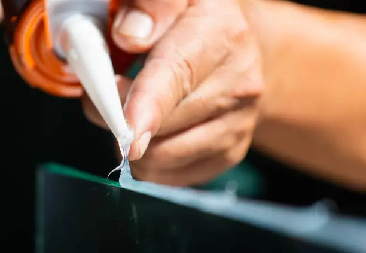
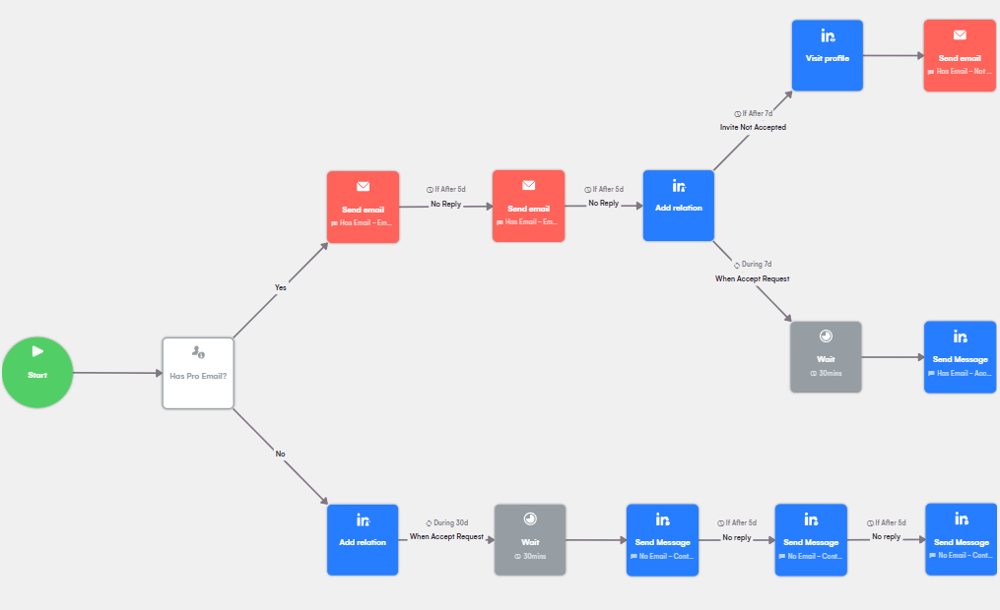
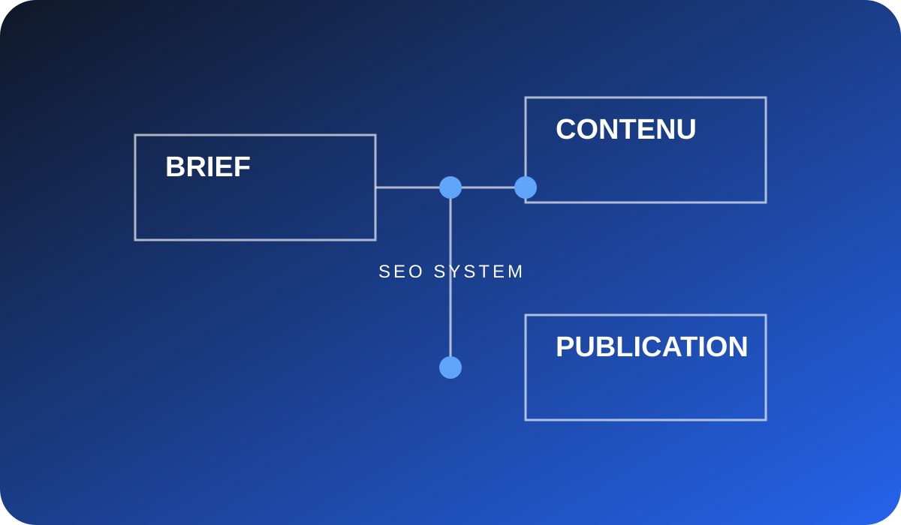
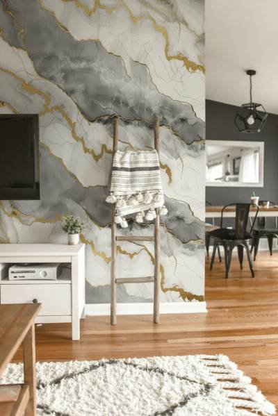

✦ Yacin Bakadir · Marketing systems
Je fais avancer
les idées.
↗ Explorer le travail
Acquisition B2B, automatisation et contenu : je transforme un objectif flou en système concret, testable et mesurable.
↗ Parler d’un projet
Acquisition B2B ↗
Automatisation & data ↗
Contenu & SEO ↗
Brand & ads ↗Environnements
Ils m’ont fait confiance.
Sélection
Du concret.
Pas du décor.
Des projets construits pour apprendre, produire et obtenir des signaux réels.
↗
01 / Acquisition
Prospection outbound automatisée pour une entreprise de nettoyage.
Un système pour passer d'une cible locale à une base de comptes qualifiés, puis à une séquence de messages suivie proprement.
↗
02 / Data
Enrichissement de données avec Apps Script.
Un workflow pour nettoyer, compléter, scorer et préparer des données commerciales sans dépendre d'un outil lourd.